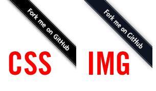

Github Ribbons in CSS

Github has these cool ribbon images that you can use if you want to encourage forking your project on your site. They're great and I wanted to use them on a little project I am working on. However, one of my goals was not to use any images, but rather produce all display elements with CSS.
It was a little bit of trial and error but I got it working. Basically you do the following:
- Create a link in a div with an id of "banner"
- Force div#banner to be 149px x 149px.
- Set overflow to "hidden"
This creates a square display area that won't show things that stretch out past the bounds of the box.
- Create an A link
- Tilt it using a CSS transform
- Use relative positioning to pull the ribbon into place
- Use CSS shadows to tweak the text and ribbon shadows
- Finally I use a CSS gradient in the background of the ribbon to give it the bands that run along the edge.
Issues:
- It's not a pixel perfect representation.
- It doesn' work on IE before 9. It doesn't appear at all.
I'm not sure if I'm going to use this. I'll sound judgmental here, but the fact that it doesn't show up on IE less than 9 seems like a good thing. Do I want a developer on my project that isn't using the latest browser? Probably not.
Update
A couple people pointed out that there was a weird doubling of the letters on their browser (Chrome on Windows, and Safari on iPad.) Looks like it was caused by a slight text-shadow I had on the text. The text on the original banner has some anti-aliasing going on, and on some browsers, the text shadow helps it look a little smoother, but on others you get that doubling. So I've removed the text shadow. Display should be a little more consistent.
5 responses so far ↓
1 Raymond Camden
The demo version has a 'doubling' effect on the text. I can send a screen shot if you want. It's a small effect, but very obvious.Leave a Comment